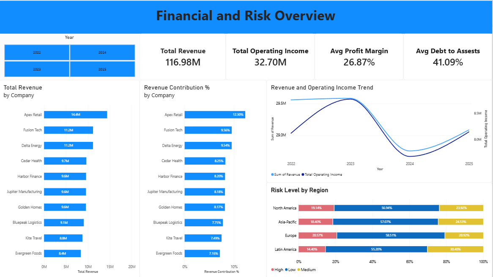
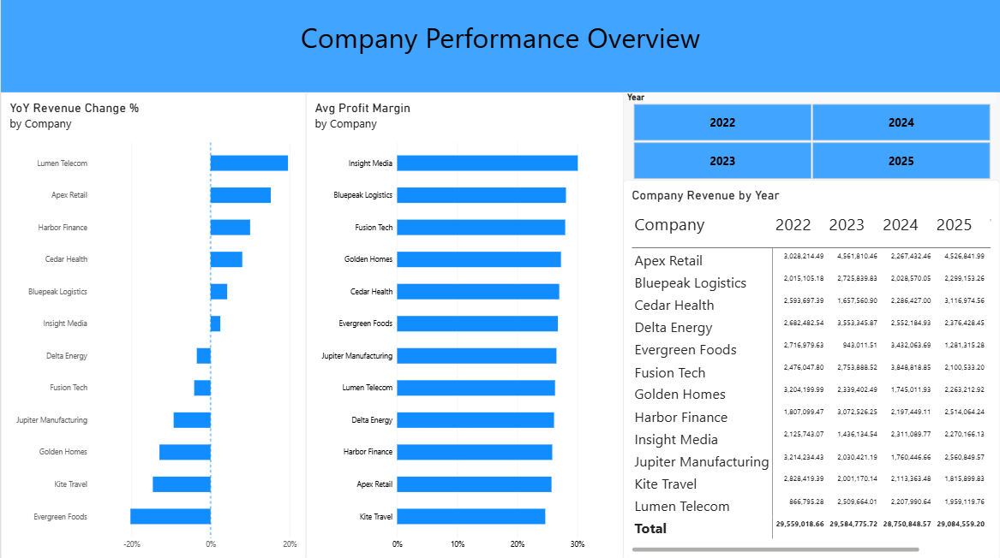

Project Overview
The objective of this project was to analyze financial data and identify patterns in revenue, company performance, and year-over-year growth.
The project follows an end-to-end workflow: data cleaning, exploratory analysis, SQL analysis, and dashboard development.
Business Questions
- Which companies generate the most total revenue?
- What percentage of total revenue does each company contribute?
- How does revenue change year over year?
- Which companies show significant changes in revenue?
- What are the major financial trends?
Data Cleaning
The raw dataset was reviewed and standardized before analysis.
- Checked for missing values.
- Removed or investigated duplicate records.
- Standardized company names.
- Cleaned and standardized date fields.
- Checked numerical columns for consistency.
- Reviewed unusual or invalid values.
SQL Analysis
MySQL was used to answer business questions and calculate financial metrics.
- Aggregations using SUM and AVG.
- GROUP BY and ORDER BY.
- Common Table Expressions.
- Window functions.
- SUM() OVER() for revenue contribution.
- LAG() for year-over-year analysis.
Power BI Dashboard
The final analysis was visualized in Power BI to make financial trends and company performance easier to understand.
The dashboard includes financial KPIs, company comparisons over revenue and profit, risk level and year-over-year analysis.


Business Insights
This section will contain the final insights discovered during the analysis.
- Add your revenue finding here.
- Add your company contribution finding here.
- Add your year-over-year finding here.
Project Files
The complete analysis files will be available in the GitHub repository.
- Excel data-cleaning workbook
- MySQL SQL queries
- Power BI dashboard
← Back to Portfolio